Combinarea corespondenței este un instrument util care vă permite să produceți mai multe litere, etichete, plicuri, etichete de nume și multe altele folosind informațiile stocate într-o listă, bază de date sau foaie de calcul. Când efectuați o îmbinare prin corespondență , veți avea nevoie de un document Word
(puteți începe cu unul existent sau puteți crea unul nou) și o listă de destinatari, care este de obicei un registru de lucru Excel.
-
Deschideți un document Word existent sau creați unul nou.
-
Din fila Mailings, faceți clic pe comanda Start Mail Merge și selectați Step-by-Step Mail Merge Wizard din meniul drop-down.
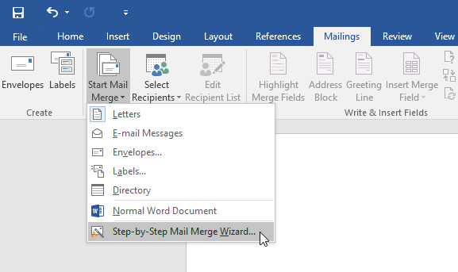
Va apărea panoul Îmbinare corespondență și vă ghidează prin cei șase pași principali pentru a finaliza o îmbinare.
Următorul exemplu demonstrează cum să creați o scrisoare formular și să îmbinați scrisoarea cu o listă de destinatari.
-
Din panoul de activități Combinare corespondență din partea dreaptă a ferestrei Word, alegeți tipul de document pe care doriți să îl creați.
În exemplul nostru, vom selecta Scrisori. Apoi faceți clic pe Următorul: document de pornire pentru a trece la Pasul 2.
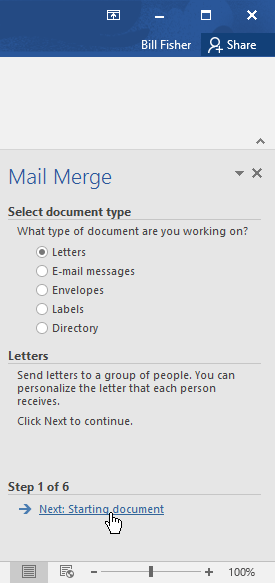
-
Selectați Utilizați documentul curent, apoi faceți clic pe Următorul: Selectați destinatarii pentru a trece la Pasul 3.
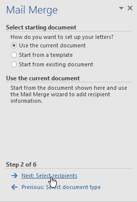
Acum veți avea nevoie de o listă de adrese, astfel încât Word să poată plasa automat fiecare adresă în document. Lista poate fi într-un fișier existent,
cum ar fi un registru de lucru Excel sau puteți tasta o nouă listă de adrese din Expertul de îmbinare prin corespondență.
-
Selectați Utilizați o listă existentă, apoi faceți clic pe Răsfoire pentru a selecta fișierul.
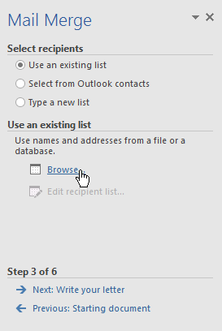
-
Găsiți fișierul, apoi faceți clic pe Deschidere.
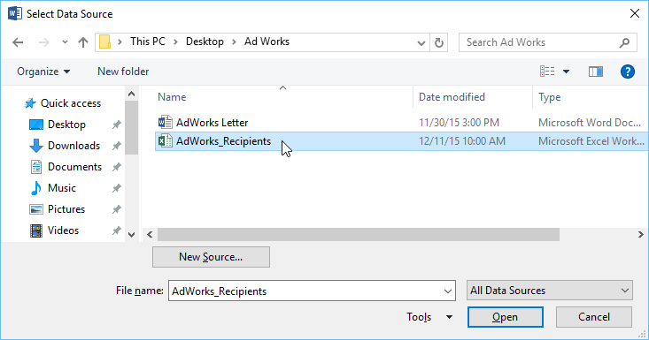
-
Dacă lista de adrese este într-un registru de lucru Excel, selectați foaia de lucru care conține lista, apoi faceți clic pe OK.
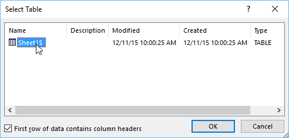
-
În caseta de dialog Destinatari de îmbinare prin corespondență , puteți bifa sau debifa fiecare casetă pentru a controla ce destinatari sunt incluși în îmbinare.
În mod implicit, toți destinatarii trebuie selectați. Când ați terminat, faceți clic pe OK.
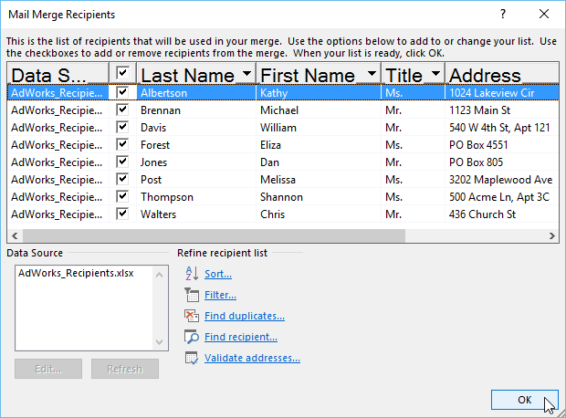
-
Faceți clic pe Următorul: scrieți scrisoarea pentru a trece la Pasul 4.
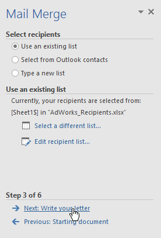
Acum ești gata să-ți scrii scrisoarea.
Când este tipărită, fiecare copie a scrisorii va fi practic aceeași; numai datele destinatarului (cum ar fi numele și adresa ) vor fi diferite.
Va trebui să adăugați substituenți pentru datele destinatarului, astfel încât Mail Merge să știe exact unde să adauge datele.
-
Plasați punctul de inserare în document în care doriți să apară informațiile.
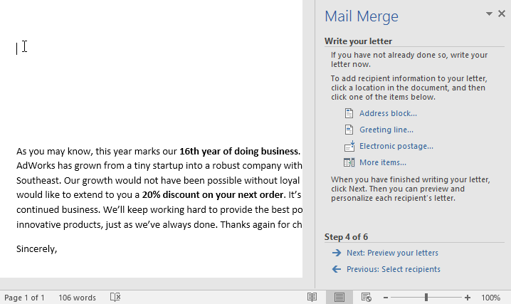
-
Alegeți una dintre opțiunile de substituent. În exemplul nostru, vom selecta Address block.
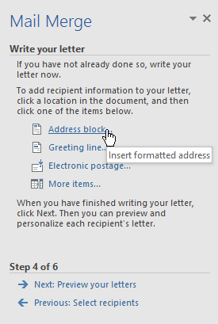
-
În funcție de selecția dvs., poate apărea o casetă de dialog cu diferite opțiuni de personalizare. Selectați opțiunile dorite, apoi faceți clic pe OK.
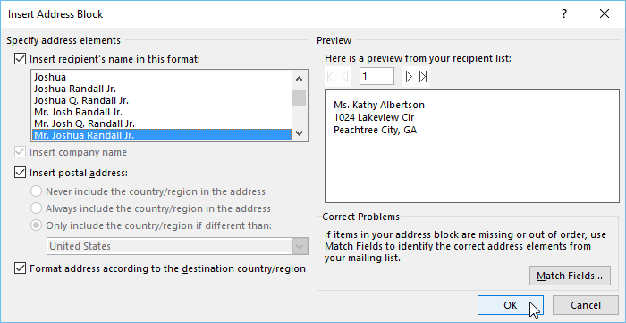
-
Un substituent va apărea în documentul dvs. (de exemplu, «AddressBlock»).
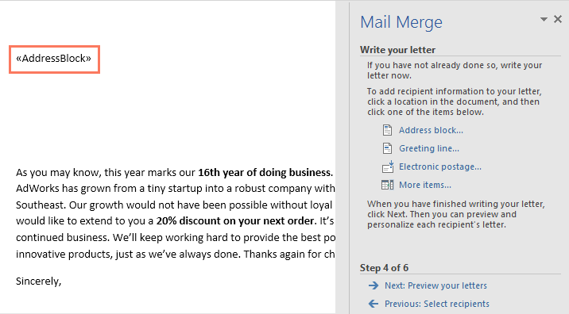
-
Adăugați orice alți substituenți doriți. În exemplul nostru, vom adăuga un substituent pentru linia de salut chiar deasupra corpului scrisorii.
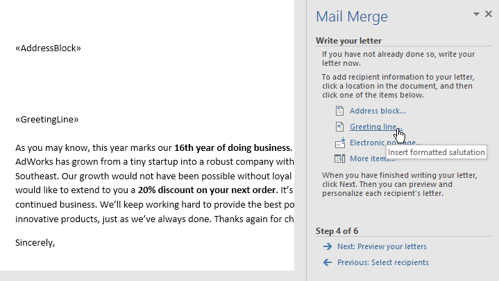
-
Când ați terminat, faceți clic pe Următorul: previzualizați literele pentru a trece la Pasul 5.
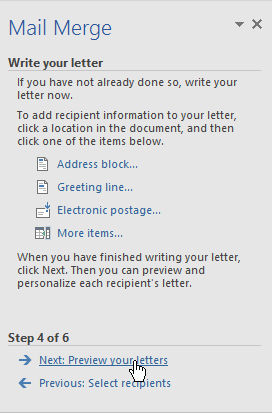
-
Previzualizați scrisorile pentru a vă asigura că informațiile din lista de destinatari apar corect în scrisoare.
Puteți utiliza săgețile de derulare la stânga și la dreapta pentru a vizualiza fiecare versiune a documentului.
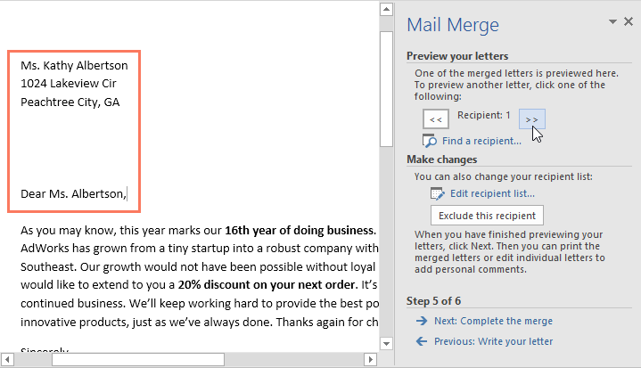
-
Dacă totul pare corect, faceți clic pe Următorul: finalizați îmbinarea pentru a trece la Pasul 6.
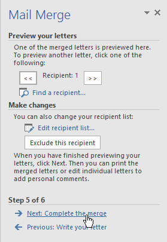
-
Faceți clic pe Print pentru a imprima literele.
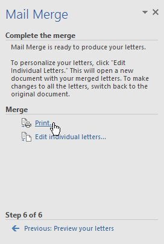
-
Va apărea o casetă de dialog. Decideți dacă doriți să imprimați
Toate scrisorile, documentul curent (înregistrarea) sau doar un grup selectat, apoi faceți clic pe OK. În exemplul nostru, vom tipări toate scrisorile.
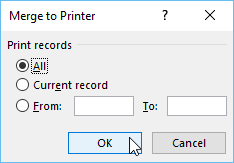
-
Va apărea caseta de dialog Print. Ajustați setările de imprimare dacă este necesar, apoi faceți clic pe OK. Literele vor fi tipărite.
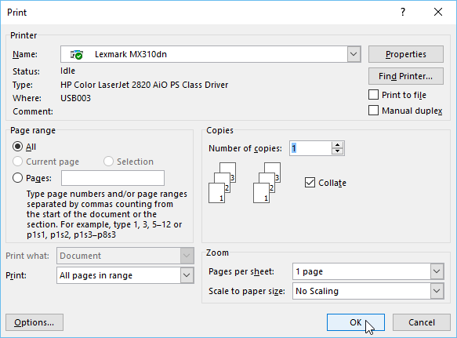